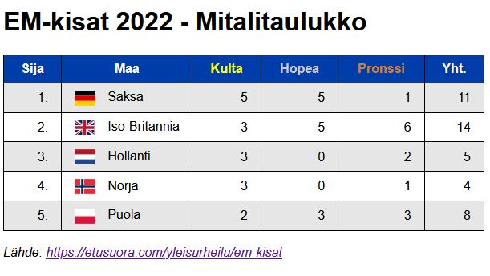
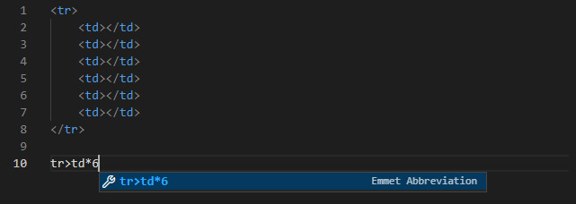

Harjoitus 4 - Taulukko
Toteuta 2022 EM-kisojen mitalitaulukko
w3schools auttaa paljon tässä(kin) tehtävässä
Malli:
Liput svg:


Voit kokeilla taulukon rivejä kirjoittaessa VS Coden Emmettiä:
Kirjoita lyhenne ja paina Tab 
Tehtävä
HTML:
- Tee index.html ja style.css
- Linkitä tyylitiedosto html-tiedostoon
- Lisää pääotsikko 'EM-kisat 2022 - Mitalitaulukko'
- Laita sama myös sivun titleen
- Tee taulukko jossa on 1 otsikkorivi ja 5 datariviä
- Lisää otsikkoriville tiedot (Sija, Maa, Kulta, Hopea, Pronssi, Yht.)
- Sija-sarakkeeseen tullee juokseva numerointi 1. - 5.
- Lisää maakohtaiset tiedot taulukon datariveille
- Lisää Maa-sarakkeeseen kyseisen maan lippua ennen maan nimeä
- Täydennä myös lipun alt-teksti maan nimellä
- Kirjoita taulukon alle lähde ja linkki lähteeseen
- Lähde: https://etusuora.com/yleisurheilu/em-kisat
CSS:
- Aseta sivun fontiksi esim. Arial tai etsi sopiva Google Fonts fontti
- Piirrä taulukon solujen ääriviivat (border)
- Poista taulukon solujen väliin jäävät alueet (border-collapse)
- Levennä taulukkoa, mutta lisää maksimileveys (width: 100%; max-width: 600px;)
- Voit estää rivin vaihtumiset (case Iso-Britannia) lisäämällä taulukolle (white-space: nowrap;)
- Lisää taulukon soluille padding (ylös ja alas 0.5em, vas ja oik 1em)
- Rajoita lippukuvien leveys 25px
- Lisää marginaalia lippukuviin, jotta ne eivät ole kiinni tekstissä
- Tee taulukosta raidallinen lisäämällä joka toiselle datariville haalea taustaväri :nth-child(odd/even)
- Keskitä pystysuunnassa lippu ja testi (vertical-align: middle;)
- Lisää otsikkoriville taustaväri ja keskitä kaikki testit
- Anna otsikkorivin kulta, hopea ja pronssi -teksteille niitä kuvaava väri :nth-child
- Keskitä kaikki taulukon tekstit ensin oikealle
- Lisää sitten sääntö, joka keskittää 2. sarakkeen tekstit vasemmalle :nth-child
- Lisää muita tyylejä, jos keksit parannettavaa sivuston ulkoasussa
- Tallenna työt GitHubiin